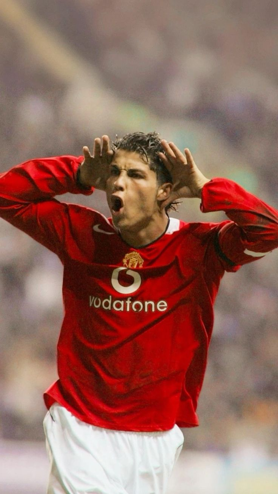
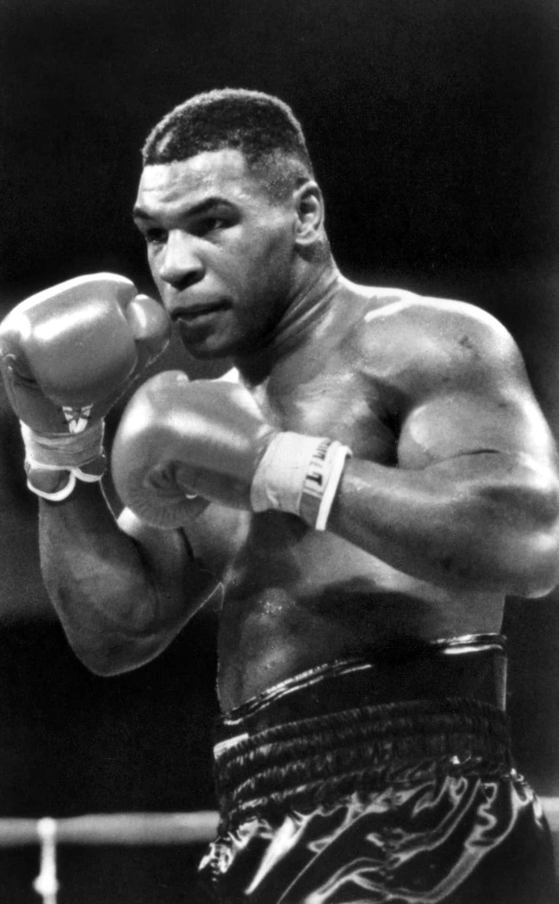
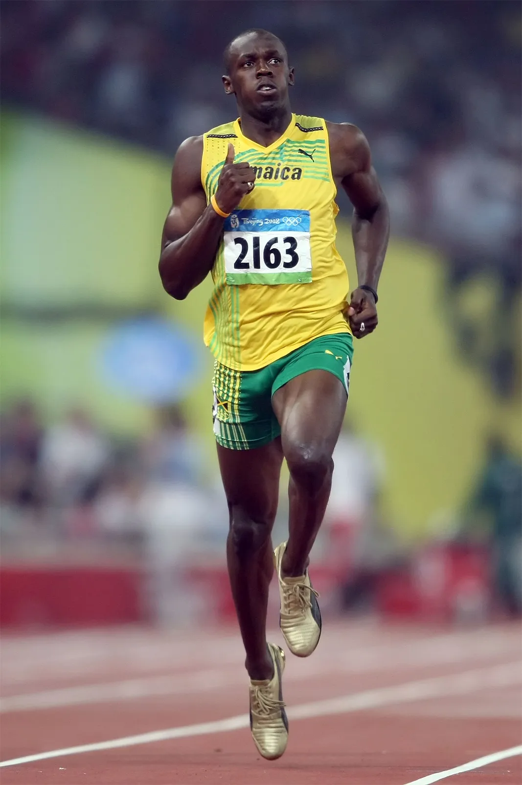

La disciplina gioca un ruolo fondamentale nella formazione dell’atleta, sia dal punto di vista fisico che mentale. Non si tratta solo del rispetto delle regole del gioco, ma di un atteggiamento costante fatto di impegno, sacrificio e controllo di sé. Ogni sport richiede allenamenti frequenti e ripetitivi, spesso faticosi, che mettono alla prova la forza di volontà dell’individuo. Senza disciplina, è facile cedere alla pigrizia o alla frustrazione quando i risultati non arrivano subito. L’atleta disciplinato, invece, si allena con costanza, ascolta i consigli dell’allenatore, cura l’alimentazione e il riposo, e affronta ogni gara con serietà. Anche nei momenti di difficoltà – come infortuni, sconfitte o pressioni – la disciplina diventa un’ancora che aiuta a non mollare. Questo atteggiamento costruisce nel tempo non solo la prestazione sportiva, ma anche la personalità dell’atleta: più responsabile, determinato e capace di affrontare le sfide.
La disciplina è importante anche nella vita di squadra: favorisce il rispetto degli altri, la cooperazione e l’autocontrollo. Senza di essa, non può esistere un vero spirito di squadra. In sintesi, la disciplina non è solo un mezzo per diventare un bravo sportivo, ma è una vera scuola di vita, che forma individui più forti, equilibrati e consapevoli.
La disciplina è uno dei pilastri fondamentali nel mondo dello sport, e atleti leggendari come Cristiano Ronaldo, Mike Tyson e Usain Bolt ne sono la dimostrazione vivente, ognuno a modo suo.
| Cristiano Ronaldo è noto per la sua etica del lavoro fuori dal comune: segue una routine di allenamento rigorosa, un’alimentazione estremamente controllata e una dedizione totale alla forma fisica. Il suo successo non è solo talento, ma soprattutto sacrificio e costanza. | Mike Tyson, pur avendo avuto una carriera segnata da eccessi e cadute, è stato un esempio di disciplina atletica nei suoi primi anni. Da giovanissimo, sotto la guida del suo allenatore Cus D’Amato, si allenava duramente ogni giorno, dimostrando concentrazione e rigore che lo portarono a diventare il più giovane campione del mondo dei pesi massimi. | Usain Bolt, pur apparendo spesso spensierato, ha raggiunto risultati straordinari grazie a un impegno serio negli allenamenti e nel perfezionamento della tecnica. La sua disciplina lo ha reso l’uomo più veloce della storia. |
|  |  |  |